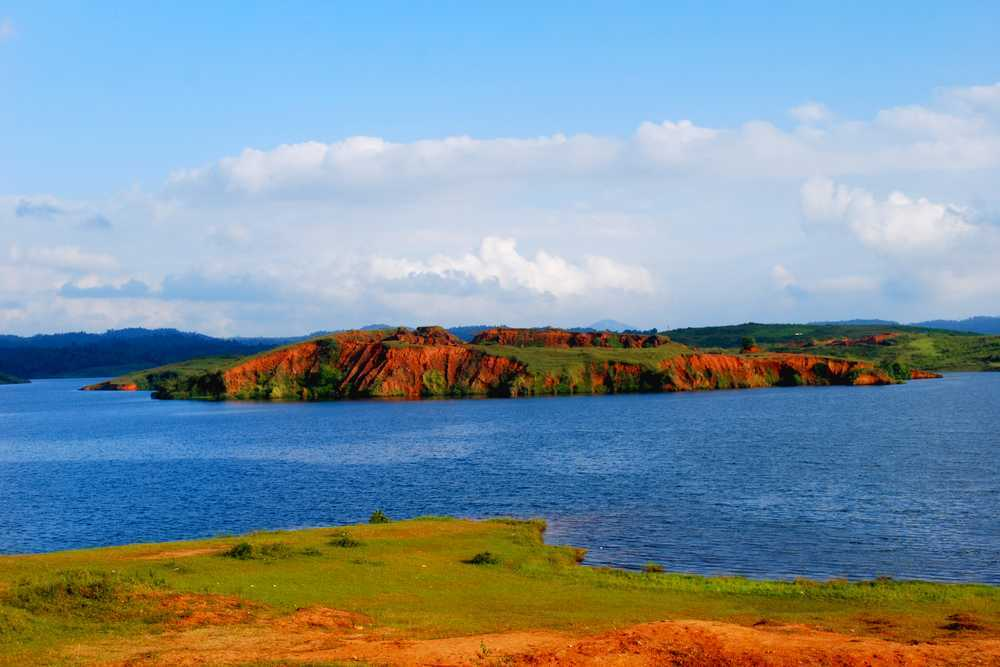
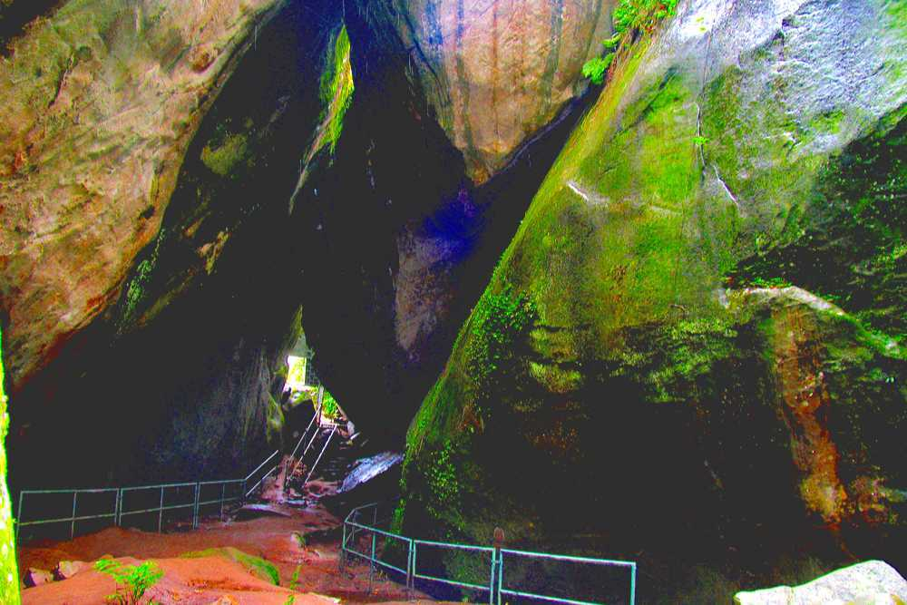

WAYANAD - Nature's Adobe
1. BANASURASAGAR DAM
 The hills, rivers and grassland, all come together to enshrine the magnificent Banasura Sagar Dam in Wayanad. One has no option but to be in awe of the largest earthen dam in India and the second largest in Asia. But it isn’t just statistics that add to its mysticism. The surroundings are pristine with a cool breeze opening up a valley full of gigantic slopes, crystal clear waters, a wildlife sanctuary and a plethora of flowering plants. It is among the most popular picnic locations in the district along with its multitude of boating options. Our trekking aficionados can find more than few hidden trails that lead to spots with exquisite visuals of the surrounding valley.
Part of the Banasura Sagar Project, Banasura Sagar Dam in Wayanad is one of the most active tourist spots in Wayanad and for good reason. In Wayanad, Banasura Dam is a unique structure as it is a completely earthen dam. The lake formed by Banasura Sagar Dam in Wayanad is immensely beautiful. The view from atop Banasura Sagar Dam in Wayanad is simply superb and stretches on for miles. Famous as Kerala is for its diverse wildlife and flora, it should hardly be surprising that Banasura Sagar Dam in Wayanad is surrounded by great natural beauty. Evidently, the Wayanad Banasura Dam is the best tourist location. Close to several wildlife sanctuaries such as Kozhikode Wildlife Sanctuary, Bramhagiri Wildlife Sanctuary, Wayanad Wildlife Sanctuary, and Muthanga Wildlife Sanctuary, Banasura Sagar Dam Wayanad is a great location.
2. MEENMUTTY WATERFALLS


Imagine water crashing onto the ground from over 1,000 ft. in three separate levels while an entire rainforest plays its role as the patient, supporting audience. This and much more await you at Meenmutty Falls, one among Wayanad’s delightful treasures. It can be only accessed after an arduous 2 km jungle trek, the visuals on display at the summit are worth the effort. One has separate viewing points for each of the three decks of the waterfalls and due to its location this is one of the few natural wonders in the world that can be experienced in near seclusion. You feel at ease, while the lush greenery gently washes away all that ails your soul, as the roaring water gently soothes your senses. A masterpiece, the waterfalls lie on the Ooty route in Wayanad.
3. EDAKKAL CAVES

Lies in between the mountains of the Western Ghats, with Kerala's rich historical and cultural past make ‘Edakkal Caves’ a unique place to visit in Kerala tourism schedule. It is a Set of two natural caves located about six kilometres east of Ambalawayal in the district Wayanad, Kerala. This place was discovered by Mr. Fred Fawcett, who was then a Superintendent of Police of Malabar District in 1895 on his hunting trip to Wayanad. It showcases nature’s skill and philosophy on stand stones including Neolithic petroglyphs, stone scripts, cave drawings and pictorial wall inscriptions of human and animal figures, the swastik forms and symbols. These carvings speak of an eminently civilized people of pre-historic age, which have drawn the genuine consideration of archaeologists worldwide. It is one of the top rated wayanad places to visit.
Situated about 16 km from Sulthan Bathery ,25km from Kalpetta and tourists have to trek up the Ambukuthi Hill to reach the caves. It takes only 45 minutes to climb the hill through lush coffee plantations. Tourists can buy entry tickets from the office on the top of the mountain. A telescope is installed a few feet from the caves. It offers a panoramic view of the surrounding scenic places. The district enjoys a uniformly pleasant climate throughout the year. The hills, rocks, valleys and dense forests offer several opportunities for adventure tourism and wildlife photography. You will get all the basic kinds of Indian food in most of the Wayanad hotels and home stays. Wayanad tourism offers enough customized Wayanad tour packages including extremely relaxing honeymoon packages.